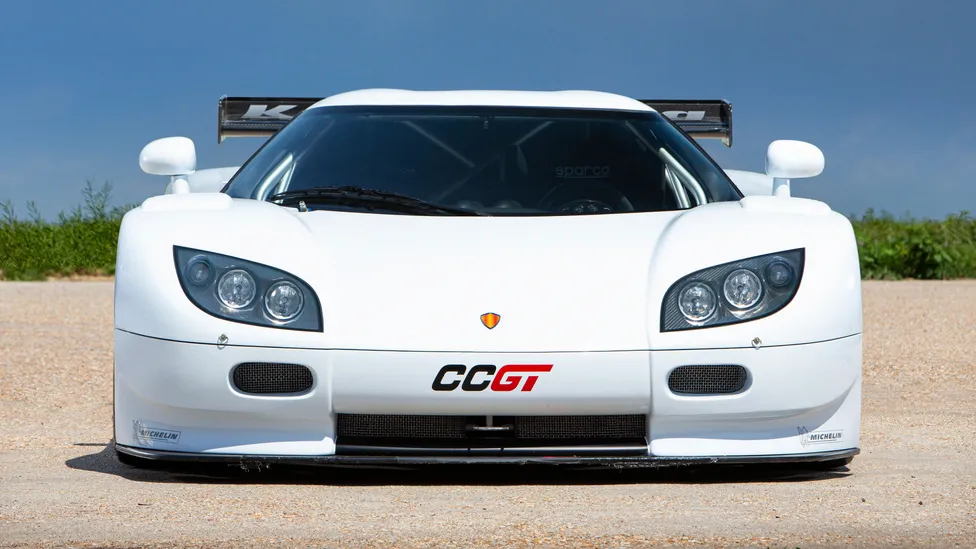

Welcome then, to a ‘side project’ that sold for millions over the weekend. The spectacular, one-off Koenigsegg CCGT GT1, originally built in 2007
The result was staggering. The car was super stiff, weighed under 1000 kg >(without ballast, required to meet the category's 1,100kg minimum weight) > and had over 600kg of downforce. The naturally aspirated 5.0l V8 engine produced 600hp, the category maximum. The few people that have driven the CCGT state it handles like a dream and that it would have been very competitive.
 View Test Drive